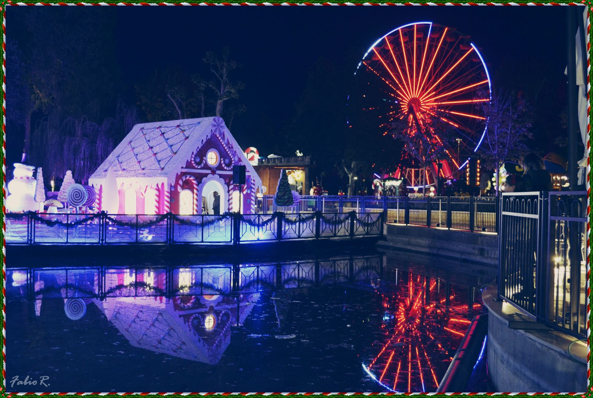
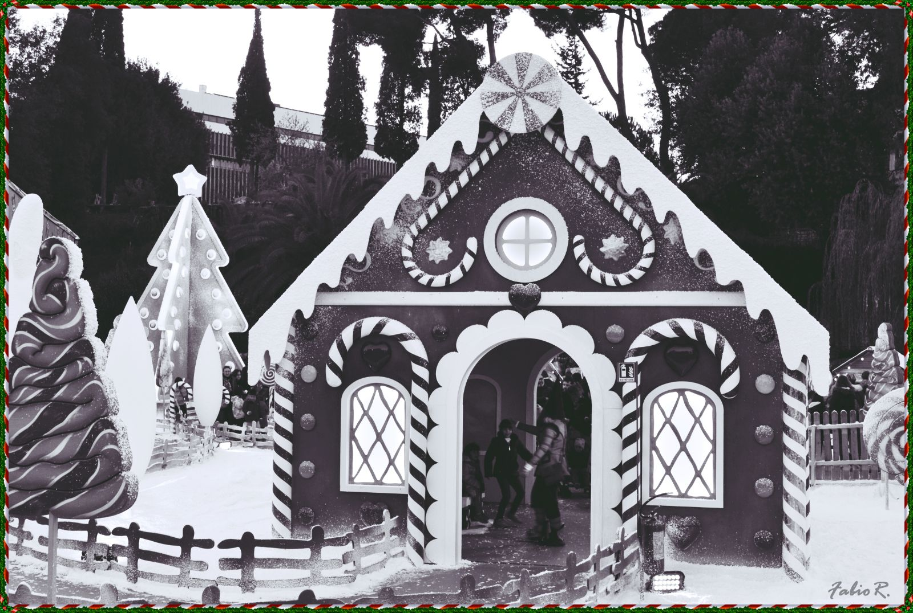
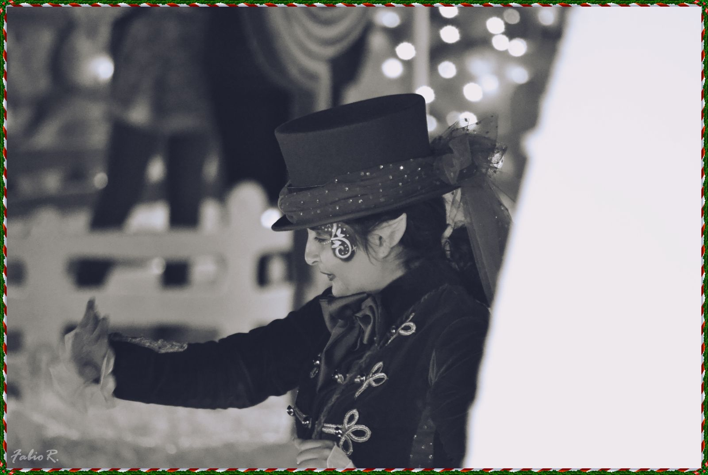
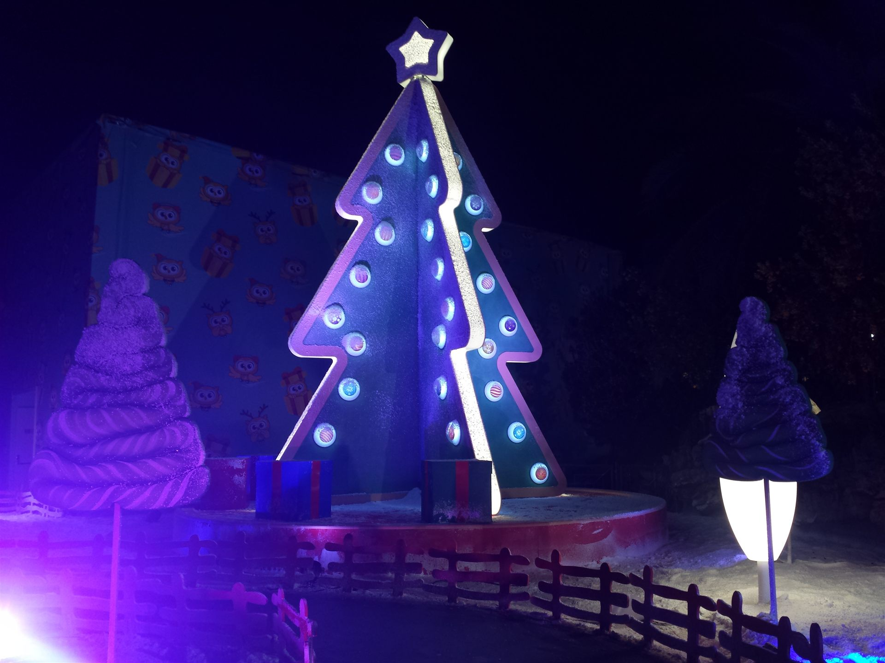
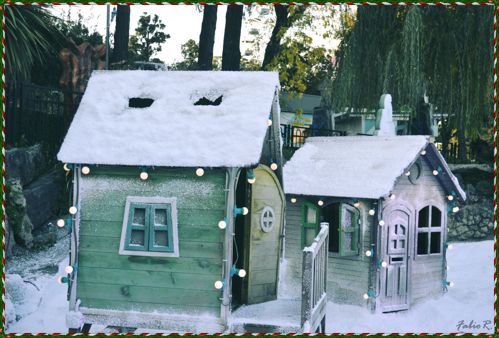
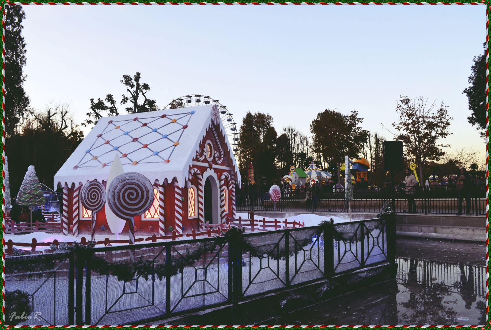

Parks · Rome · 2017
Il Regno
di Natale
Cristian Taraborrelli firma le scenografie per Il Regno di Natale: un villaggio di oltre 2600 metri quadrati, allestito nel cuore del Parco LunEur di Roma.
Tre strutture scenografiche che trascinano i visitatori in un’esperienza magica, al di fuori dello spazio e del tempo — un intervento che dimostra la capacità di trasformare spazi aperti in ambienti narrativi immersivi.
Cristian Taraborrelli designed the scenography for Il Regno di Natale: a village of over 2,600 square metres, set up in the heart of Rome’s LunEur Park.
Three scenic structures that draw visitors into a magical experience, beyond space and time — an intervention that demonstrates the ability to transform open spaces into immersive narrative environments.
Cristian Taraborrelli a signé les décors pour Il Regno di Natale : un village de plus de 2 600 mètres carrés, installé au cœur du Parc LunEur de Rome.
Trois structures scénographiques qui entraînent les visiteurs dans une expérience magique, au-delà de l’espace et du temps — une intervention qui démontre la capacité de transformer des espaces ouverts en environnements narratifs immersifs.
Gallery






Rassegna Stampa
« Cristian Taraborrelli firma le scenografie per Il Regno di Natale: un villaggio di oltre 2600 metri quadrati, allestito nel cuore del Parco, composto da tre strutture scenografiche che vi trascineranno in un’esperienza magica, al di fuori dello spazio e del tempo. » « Cristian Taraborrelli designed the sets for Il Regno di Natale: a village of over 2,600 square metres, set up in the heart of the Park, composed of three scenic structures that will draw you into a magical experience, beyond space and time. » « Cristian Taraborrelli a signé les décors pour Il Regno di Natale : un village de plus de 2 600 mètres carrés, installé au cœur du Parc, composé de trois structures scénographiques qui vous entraîneront dans une expérience magique, au-delà de l’espace et du temps. »
— Stampa · 25 novembre 2017
Tags